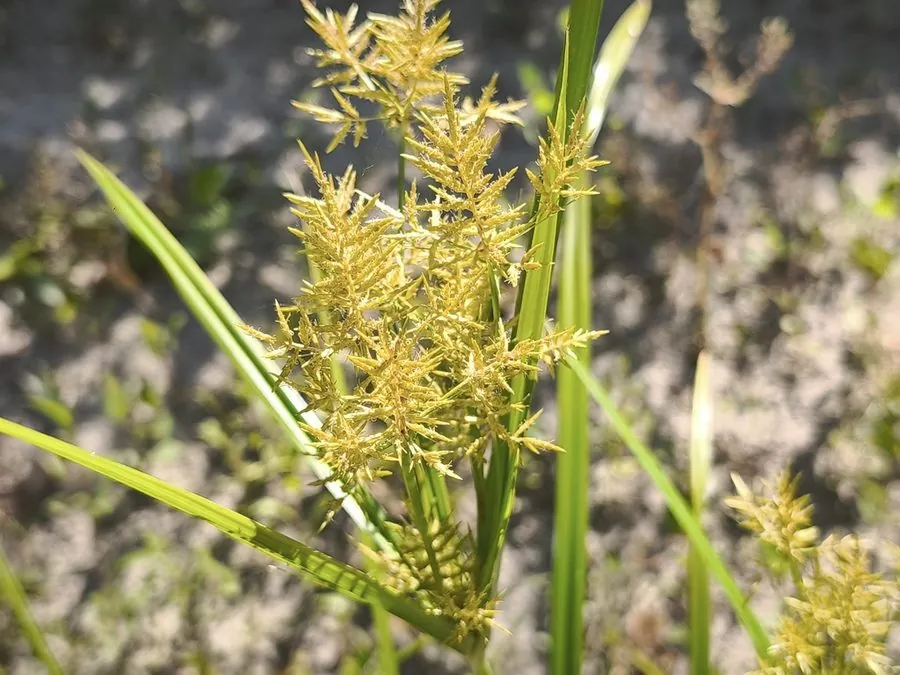

农作物与经济植物 · 植物界
油莎豆 Cyperus esculentus

莎草科多年生草本，地下块茎含油丰富、味甜可生食，可榨油、酿酒，原产地中海与非洲，被称为“地下核桃”。
- 分类
- 门被子植物门纲木兰纲目禾本目科莎草科属莎草属
- 栖息环境
- 温暖地区的沙壤农田、河岸与湿地边缘，喜光、耐旱耐湿
- 地理分布
- 原产地中海沿岸与北非，中国北方、西班牙、西非等地栽培或逸生
- 保护级别
- 暂无评估；栽培与逸生种群均常见
物种志
油莎豆为莎草科莎草属多年生草本，株高 30–80 厘米，具细长根状茎与地下块茎。茎三棱形，叶线形，基生。块茎卵形至长圆形，长 1–2 厘米，成熟时褐色，表面有横纹，形似小荸荠。花序为伞形聚伞花序，花小，黄褐色，花期 6–8 月。
油莎豆原产地中海沿岸与非洲北部，古埃及人已有食用记载。块茎含淀粉、糖与油脂（含油量约 20–30%），可生食、煮食、榨油、酿酒或磨粉做饮料，风味介于坚果与椰奶之间，被称为“地下核桃”。栽培喜温暖、阳光充足与疏松沙壤土，靠块茎繁殖，生长期 4–5 个月。它繁殖力极强，遗漏的小块茎次年即萌发，在部分地区的农田中被视为难除杂草。
形态与习性
- 原产地地中海沿岸与非洲北部
- 株高30–80 厘米，茎三棱形
- 块茎长 1–2 厘米，含油 20–30%，味甜
- 用途榨油、煮食、酿酒、磨粉制植物奶
- 栽培喜温向阳，沙壤土，块茎繁殖
- 注意繁殖力强，易成农田难除杂草
趣味知识
- 油莎豆的块茎含油量可达 20–30%，是少数能直接榨油的草本作物之一。
- 它味甜、带椰香，西班牙瓦伦西亚地区用它制作传统饮品“欧洽塔”。
- 地下块茎形似小荸荠，表面有环状横纹，因此也被叫作“铁荸荠”。
- 在农田中它极难根除，遗漏一块茎就能繁衍成片，被列为世界性杂草。